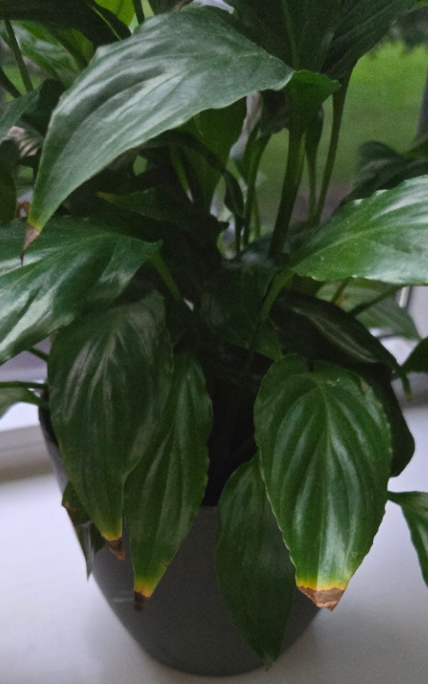
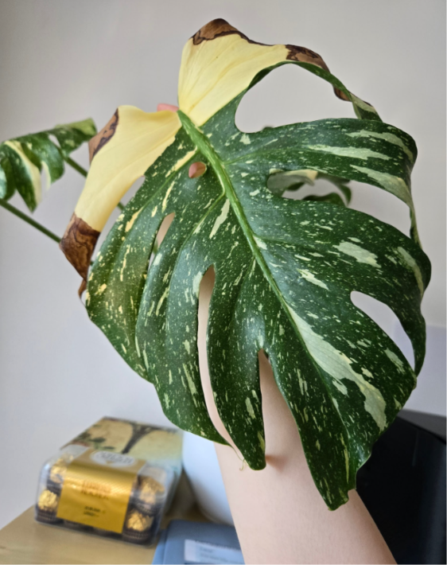
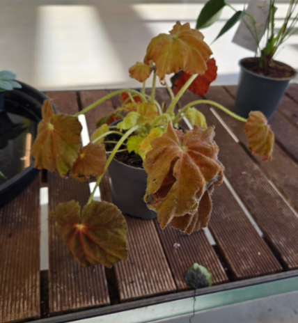

1. Heat exposure The peace lily on the photo has suffered a heat exposure that makes itself known by dry, brown leaf tips. What causes that os being close to a heat source, like against a window during hot weather or being near a radiator. To prevent that move the plant out of the way of harsh direct sunlight, or other sources of warmth. 
2. Inconsistent watering The discoloration on the leaves of this monstera plant are signs of stress. In this case, it has been caused by inconsistent watering. Sudden floods after being severely dry can cause root stress. To prevent this, avoid watering the plant excessively after periods of dryness. Even when you remember to water it, do it gradually. 
3. Overwatering This Rex Begonia’s leaves are curling and drooping, which are signs of severe stress. The reason why this plant is displaying these signs is because it has been severely overwatered. If the soil stays constantly soggy, the roots suffocate and rot. Once the roots die, they can no longer absorb water, which causes the plant to look wilted 